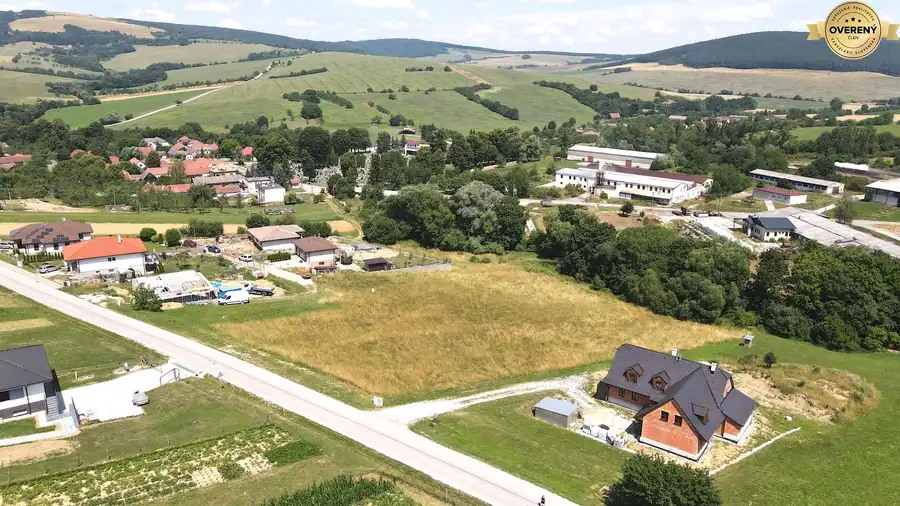
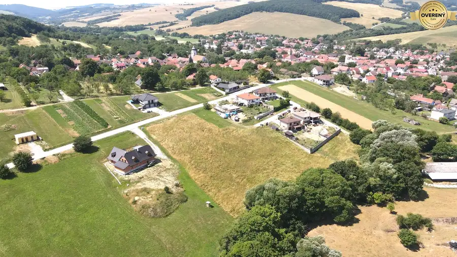
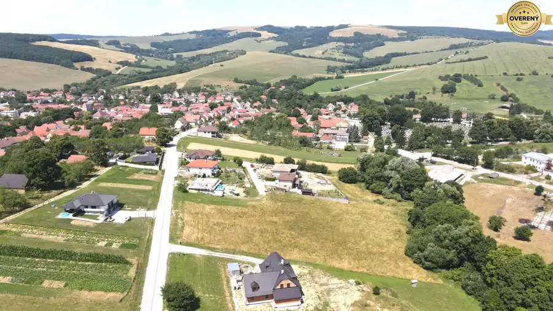

Rodinný dom Dojč, pozemok 1968 m2, voda + kanalizácia
Dojč
- Dispozícia3-izbový
- Plocha82 m²
- Poschodie0. z 1
- Stavčiastočne prerobený
- Vlastníctvoosobné
- Energetická triedaG
O nehnuteľnosti
Rodinný dom s veľkým pozemkom v Dojči + možnosť rozdelenia a ďalšej výstavby
Ak hľadáte dom s poriadnym pozemkom, kde máte priestor dýchať – toto je ono.
MAREČEK REALITY ponúka na predaj rodinný dom v tichej časti obce Dojč.
Miesto, kde vás ráno nebudí premávka, ale pokoj.
Nehnuteľnosť je vhodná:
na trvalé bývanie,
ako víkendový dom,
alebo ako investícia s potenciálom ďalšej výstavby.
A práve v tom je jej sila.
Základné parametre:
pozemok: 1 968 m²
zastavaná plocha domu: 96 m²
rok výstavby: 1944
3 izby
orientácia na juhozápad
rovinatý terén
osobné vlastníctvo
Takmer 2 000 m² – to už nie je záhrada. To je priestor.
Stav a možnosti:
Dom prešiel čiastočnou rekonštrukciou – nová strecha a vybudovaný vikier sú už hotové.
Elektrina je zavedená.
Na pozemku sa nachádza vlastná studňa, hospodárska budova a k domu je novovybudovaná obecná voda a kanalizácia.
Áno, dom si vyžiada ďalšiu rekonštrukciu.
Ale práve v tom je príležitosť – spravíte si ho presne podľa seba, nie podľa vkusu niekoho iného z roku 2008.
Dispozícia umožňuje vybudovať schodisko do podkrovia, kde je možné dobudovať ďalšie dve izby a kúpeľňu.
Z 3-izbového domu tak viete spraviť plnohodnotný rodinný dom s výrazne väčšou obytnou plochou.
Možnosti kúpy:
Variant 1
Dom s celým pozemkom 1 968 m²
Cena: 150 000€
Ideálne pre niekoho, kto chce veľký pozemok, súkromie a rezervu do budúcnosti.
Variant 2 – rozdelenie pozemku
Dom s prístavbou + 750 m² pozemku
Cena: 99 850€
Samostatný stavebný pozemok 968 m²
Cena: 49 750€
Ku každému bude patriť podiel na prístupovej ceste (cca 250 m²).
To znamená:
bývate a druhý pozemok si necháte ako investíciu,
alebo predáte samostatne,
prípadne postavíte ďalší dom.
Toto nie je len dom.
Toto je kombinácia bývania a príležitosti.
Ak vás zaujíma viac detailov alebo si chcete pozrieť nehnuteľnosť osobne, ozvite sa.
Takéto pozemky s potenciálom sa na trhu neobjavujú často.
Bližšie informácie Vám radi poskytneme na telefónnom čísle alebo na e-maile:
Servis od realitnej kancelárie zahrnuje:
- Odporučíme vám najvhodnejšie financovanie na kúpu nehnuteľnosti,
Odporučíme znalca na ohodnotenie nehnuteľnosti
Geodetické práce
- Vypracovanie kúpnopredajných zmlúv
- Vypracovanie dokumentácie na kataster
- Úhrada správneho poplatku za prevod vlastníckych práv,
- Vypracovanie odovzdávacieho protokolu k nehnuteľnosti
- Inštrukcie k prehláseniu energií
Parametre
| Rozloha pozemku | 1968 m² |
|---|---|
| Zastavaná plocha | 96 m² |
| Úžitková plocha | 82 m² |
| Poschodie | prízemie |
| Počet poschodí | 1 |
| Počet izieb | 3 |
| Vlastníctvo | osobné |
| Stav | čiastočne prerobený |
| Odvoz odpadu | áno - separovaný |
| Voda | studňa a vodovod |
| El. napätie | 230/400V |
| Plyn | nie |
| Kanalizácia | áno |
| Internet | nie |
| Kúpeľňa | nie |
| Vykurovanie | vlastné - pevné palivo |
| Balkón | nie |
| Lódžia | nie |
| Terasa | nie |
| Pivnica | nie |
| Garáž | nie |
| Parkovanie | vlastné vyhradené |
| Inžinierske siete | áno |
| Postavené z | tehla |
| Zariadenie | nezariadený |
| Zateplený objekt | nie |
| Strecha | po rekonštrukcii |
| Klimatizácia | nie |
| Káblová televízia | nie |
| Energetický certifikát | G |
| Predzáhradka | áno |
| Bezbariérový prístup | nie |
| Okná | plastové |
| Terén | rovina |
| Prístupová cesta | asfaltová cesta |
| Dátum zverejnenia | 12. 2. 2026 |
Kde to je
Mohlo by Vás zaujímať

Pozemok8 42 420 €Stavebný pozemok 1212 m2, Vrbovce, okr. Myjava Vrbovce 1212 m² Prečítajte si zaujímavé informácie o jedinečnej príležitosti stavať vo Vrbovciach. Ponúkam vám pozemok v okrajovej časti obce s výmerou 1212 m2,…
Pozemok8 39 060 €Stavebný pozemok 1116 m2, Vrbovce, okr. Myjava Vrbovce 1116 m² Prečítajte si zaujímavé informácie o jedinečnej príležitosti stavať vo Vrbovciach. Ponúkam vám pozemok v okrajovej časti obce s výmerou 1212 m2,…
Pozemok8 36 505 €Stavebný pozemok 1043 m2, Vrbovce, okr. Myjava Vrbovce 1043 m² Prečítajte si zaujímavé informácie o jedinečnej príležitosti stavať vo Vrbovciach. Ponúkam vám pozemok v okrajovej časti obce s výmerou 1212 m2,…